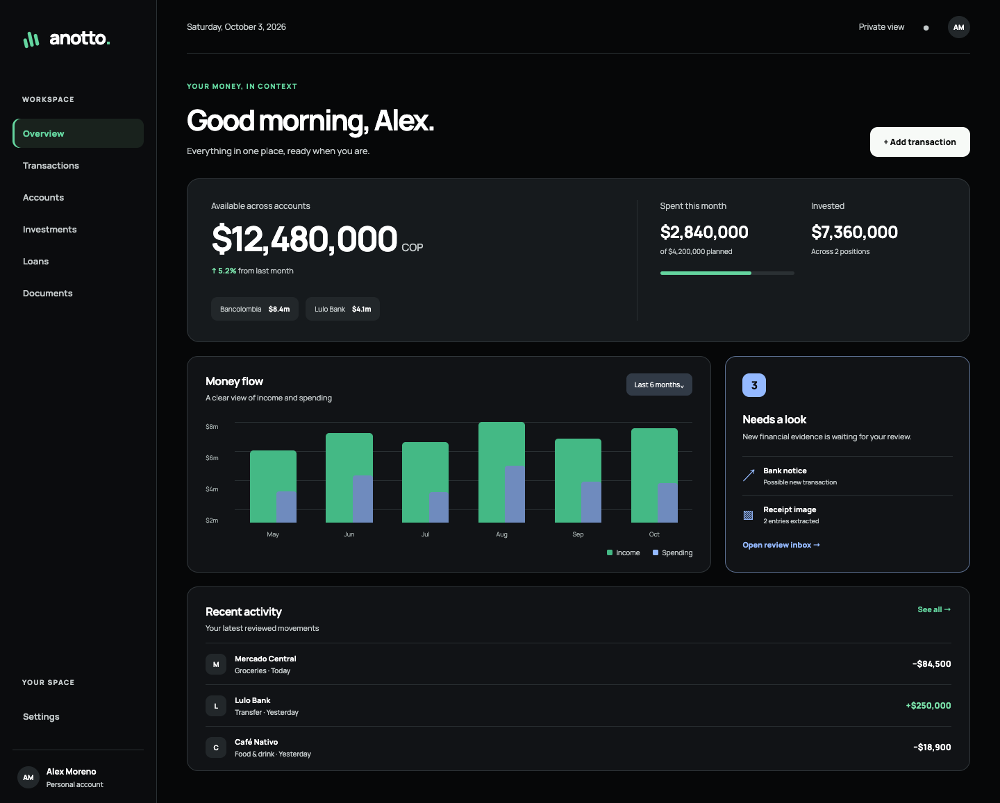
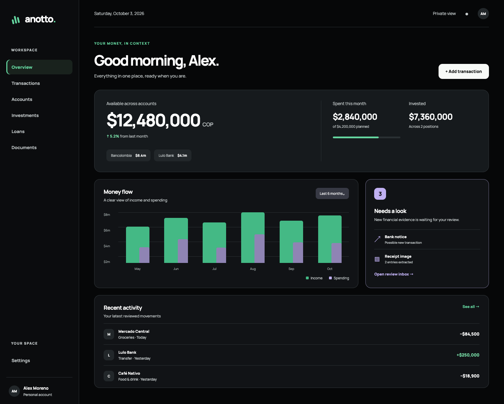
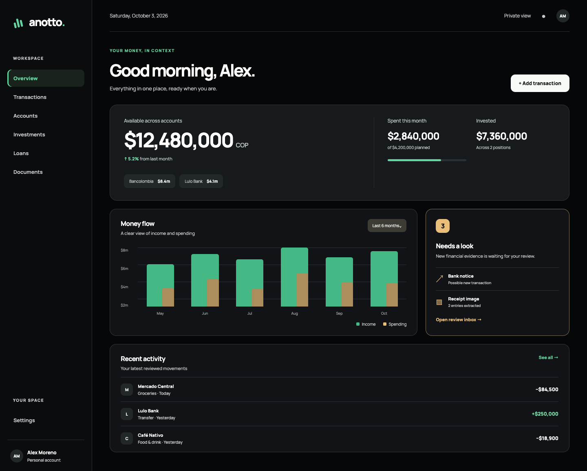
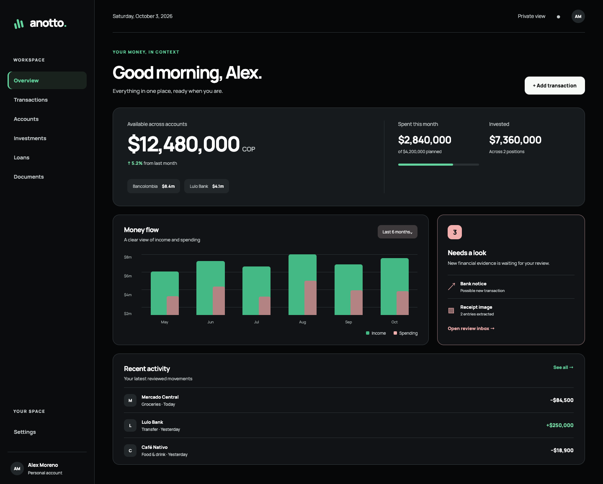

Four accents on the preferred Void Emerald concept. The logo, layout, typography, primary action, and positive green signals stay identical. Only supporting data and review details change color.



